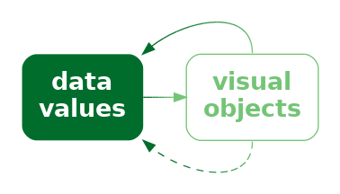
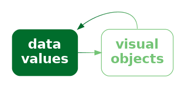
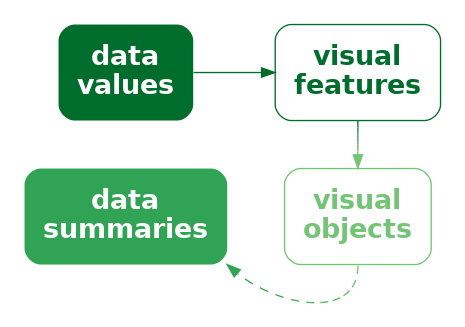
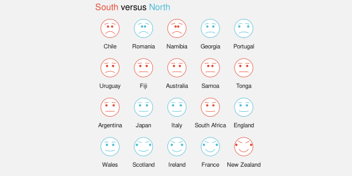
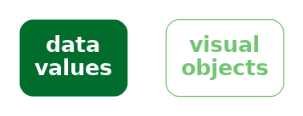
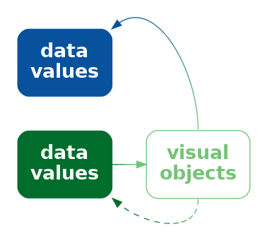
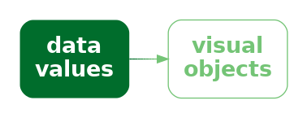

12 Visual Objects
Figure 12.1 shows a scatter plot of the number of clean breaks and the number of tries for countries at the 2023 Rugby World Cup (Table 9.1). This data visualisation is similar to Figure 9.4, but it adds an extra mapping. Country names are encoded as the pattern of the data symbols. This is a reasonable mapping, despite the large number of different countries, because each different shape only appears once. We are able to distinguish all countries from each other and, thanks to the legend, we can identify individual countries.
Figure 12.2 shows another scatter plot of the number of clean breaks and the number of tries for countries at the 2023 Rugby World Cup, but this time with flags as the data symbols. In one sense, this is just a variation on Figure 12.1 because the country names are encoded as the pattern of a data symbol. We can decode from the pattern of each data symbol to the relevant country.

The difference between the data symbols in Figure 12.1 and the data symbols on Figure 12.2 is that the flags are not only more complicated data symbols, but they are familiar symbols. We can decode that the flags are different, but we can also decode country names from the flags. In the terms of Section 2.2, the flags are visual objects because they represent visual information that is combined with prior knowledge at a higher level of visual processing.
Rather than encoding the country name as the pattern of a simple data symbol (Figure 12.1), in Figure 12.2 we have encoded each country name as a different visual object (Figure 12.3).

12.1 Learned decodings
We encode data values as visual features so that the viewers of a data visualisation can decode the data values from the visual features (Figure 3.6).
In Section 7.1, we saw that some encodings are effective because there are implicit decodings. For example, a longer bar in a bar plot naturally corresponds to a larger quantity. Basic visual features, like length, are effective thanks to pre-existing decodings that are built-in features of our visual system (Figure 7.2).
Part of the power of visual objects also comes from pre-existing decodings. However, these decodings are learned rather than being built-in. In some cases, we are able to decode values from a visual feature based on prior experience and learning—via a learned decoding—rather than due to an implicit encoding (Figure 12.4).1

For example, Figure 12.5 shows three coloured circles. Without any explicit encoding, we can decode the red circle as “stop”, the orange circle as “slow”, and the green circle as “go”. This is not a decoding that we are born with; it is a decoding that we learn through experience.

The flags in Figure 12.2 provide examples of learned decodings. We associate each flag with a particular country because we have seen these flags before and we have learned the decoding from flag to country (Figure 12.4).
In terms of visual congruence (Chapter 7), a learned decoding strengthens the effectiveness of the explicit encoding because the learned decoding leads back to the same data values that we explicitly encoded (Figure 12.6). This is similar to having a congruent implicit decoding (Figure 7.3).

Figure 12.7 demonstrates this point by repeating the scatter plot, but removing the legend. We are still able to identify not only that the data symbols represent different countries, but we can identify (at least some of) the country names as well because of the learned decoding of the flags (Figure 12.8).


Just to make the point completely clear, Figure 12.9 shows Figure 12.1 without a legend. Although we can still perceive that the data symbols are different from each other, there is no learned decoding for the shape of the data symbols in Figure 12.9, so they do not, by themselves decode to the country names. We can clearly see that Figure 12.7 contains more information than Figure 12.9.

A plot that uses visual objects as data symbols can be effective because the visual objects can convey information based on learned decodings.
Figure 12.7 also demonstrates a weakness of visual objects. The flags work well for identifying the country names only if we are familiar with all of the different flags. For example, it may only be Australians and New Zealanders who can reliably identify the difference between their two flags.
A plot that uses visual objects as data symbols may not be effective if the learned decodings have not been learned by the viewer.
Another significant problem is that the data symbols in Figure 12.7 are relatively complex. One of the reasons why data visualisations that use simple data symbols are effective, like bars in a bar plot or data points in a scatter plot, is because changes in the data are encoded as simple changes to visual features in the data symbols, like a change in the length of a bar (Section 2.5). The flags in Figure 12.7 contain many different visual features, like different colours, within the data symbol itself and differ from each other on many visual features at once, like differences in colours, patterns, and so on.
A plot that uses visual objects as data symbols may not be effective if the data symbols contain many different visual features that all change at once.
12.2 Case study: Chernoff faces
Figure 12.10 visualises the 2023 Rugby World Cup data (Table 9.1) using Chernoff faces.2 The data symbol in this visualisation is a little unusual; each country is represented by a combination of circles, curves, and lines that together produce a visual object that resembles a face (Figure 12.11). The mappings in this visualisation are also a little unusual. The number of points scored is encoded as the curvature of the smile, the number of tries is encoded as the angle of the eye brows, and the number of clean breaks is encoded as the horizontal position of the eyes.


The mappings in a Chernoff face are not very accurate (see Section 3.5; curvature is ranked below colour in terms of accuracy),3 so Cheroff faces are not very effective for decoding raw data values.
However, the familiarity of Chernoff faces means that we are easily able to decode common combinations of the facial features. For example, we can see several sad, worried faces at the top-left of Figure 12.10 and several happy, perhaps even smug, faces at the bottom-right. We can decode clusters of countries that share similar combinations of performance measures. In other words, we can decode multivariate correlations and multi-dimensional groupings in the data.
In this case, the happier faces have been arranged to correspond to the more successful teams and the teams have been ordered from least points scored to most points scored (Section 5.1). The resulting proximity helps with perceiving groups of similar faces.
A Chernoff face is effective at conveying multi-dimensional relationships because the data symbol is a familiar visual object from which we can easily decode simple human emotions.
On the downside, Chernoff faces suffer from the same problem as profile plots (Figure 11.13): they are only effective for a small amount of data. Furthermore, the faces that result is highly dependent on which variables are encoded as which features. This is similar to the problem that we saw with selecting the order and direction of axes in parallel coordinate plots (Section 11.5).
12.3 Visual features of visual objects
Figure 12.12 shows a variation of Figure 12.10. In this plot, the hemisphere of each country is encoded as the colour of the flag (large or small). Figure 12.12 shows that visual objects, although they are complex data symbols, can still have basic visual features, like colour.

This means that it is still possible to encode data values as basic visual features of visual objects, just as we can with much simpler data symbols, like data points. We saw in Section 10.4 that we can do this with other complex data symbols, visual shapes, as well.
Figure 12.13 shows another example, this time with a variation of Figure 12.7. In Figure 12.13, the hemisphere of each country is encoded as the area of the flag (large versus small). We can decode the hemisphere for each country just from this basic visual feature, separately from decoding the country name from the visual object.
12.4 Decoding visual objects
If data values have been encoded as a single consistent feature of a visual object, such as the colour or area of a visual object (Section 12.3), then decoding proceeds as for simpler data symbols like bars.
In Figure 12.2, we saw an example of encoding individual data values to visual objects: each country name is encoded as a separate flag. In this case, it is possible to decode an individual data value from each visual object. Assessing the accuracy of the decoding of quantitative data values from visual objects is difficult because there are very many possible visual objects. 4 On the other hand, the decoding of qualitative data values from visual objects, thanks to the very large range of possible objects, clearly has a very large capacity (Section 3.6). For example, there is no confusion between the large number of different flags in Figure 12.7 (apart from those silly Australian and New Zealand flags).
Figure 12.10 showed a different situation, where multiple data values are encoded within a single visual object. The result in this case is similar to when we encode multiple data values within a visual shape (Section 10.6). We are less able to decode individual data values, but we gain the ability to decode multivariate data summaries, such as multivariate clusters and multivariate correlations.
In some cases, it is also possible to obtain visual summaries of visual objects, similar to what is possible for much simpler data symbols, like data points in a scatter plot (Section 8.2). For example, in Figure 12.10, we can decode a trend of emotions from the rows of Chernoff faces, from more sad at the top to more happy at the bottom.5
12.5 Case study: Choropleth maps
Figure 12.14 shows a choropleth map of the crime rate for 2021 in each police district of New Zealand.6 The crime rate data values for this map are shown in Table 8.3.
The data symbol in Figure 12.14 is a polygon representing the geographic boundary of each police district. This implicitly entails an encoding of a police district as the position of a polygon. Crime rate is encoded as the fill colour of each polygon.
The use of polygons as data symbols is effective because the polygons form familiar shapes with familiar spatial arrangements (familiar to a New Zealand audience at least). The polygons are visual objects that have a learned decoding to districts within New Zealand. The spatial arrangements are also a form of visual congruence; the arrangements mirror the real-world spatial relationships between the regions (Chapter 7).

A choropleth map is effective because it maps geographic regions to familiar visual objects that resemble the real world regions.
A weakness of Figure 12.14 is that it encodes the quantitative crime rate as colour (chroma and/or luminance). This means that we can only decode ordinal comparisons between regions (Section 6.2). For example, we can see that the highest crime rate occurs in the Bay of Plenty (the darkest region), but it is difficult to decode how much higher that crime rate is compared to the next highest crime rate.
A choropleth map is only effective for making ordinal comparisons between geographic regions because it encodes quantitative values as colour.
Figure 12.15 shows a bar plot of the same data, which demonstrates the advantages and disadvantages of the choropleth map in Figure 12.14. In Figure 12.15, it is much easier to compare the crime rate values because crime rates are encoded as bar length. However, it is much harder to associate the different regions with their spatial arrangements because all we have are the region names. Each police district is encoded as the vertical position of a bar, with no correspondence to the spatial arrangement of the regions in the real world.

Another potential weakness with choropleth maps is the fact that regions differ in terms of area. We know from Section 7.3 that larger data symbols are associated with larger data values. The larger polygons accurately reflect the fact that some police districts are geographically larger than others, but there is potential for larger polygons to be erroneously decoded as larger crime rates.
Two alternative approaches are shown in Figure 12.16. These both retain the region shapes of the map, but map crime rates to the area of circles or the length of bars. These data symbols have a spatial arrangement that corresponds to the real-world arrangement of police districts and they provide a better decoding of crime rates from data symbols compared to the colours in the choropleth map (although area is still not the most accurate visual feature and the lengths are unaligned; Section 3.5).


12.6 Chart junk and clutter
Figure 12.17 shows a version of Figure 12.14 with two cartoon villians added in the top-left and bottom-right corners.7 These sorts of annotations are often, derisively, referred to as chart junk, with the suggestion that they add no value and make it harder to extract the important information.8

The cartoon villians are another example of visual objects. They (crudely) convey the concepts of crime and criminals. However, they are not data symbols because there is no mapping from the raw data to the cartoon villians. Their position is unrelated to the data, their colour is unrelated to the data, and their size is unrelated to the data. No information has been encoded in the visual objects, so no useful information can be decoded (Figure 12.18). The best that can be said is that they relate to the metadata, the general topic of the data visualisation.

In Section 2.5 we learned that we should keep things simple and only present visual changes that correspond to changes in the data. In Section 2.6 we learned that our attention is drawn to the larger and brighter items within an image. The cartoon villians are relatively large, complex, and colourful and bear no connection to the raw data, so there is a good chance that they will distract from the visual features that do convey data values.
Chart junk is not effective because it is impossible to decode data values from chart junk (no data values have been encoded) and because chart junk distracts from the visual elements that do represent data values.
However, it is important to point out that not all visual objects are chart junk. For example, the data symbols in Figure 12.17, the map regions, are also visual objects, but they differ from the cartoon villians because they are related to the data values.
Furthermore, visual objects that have no connection to the raw data may still have some positive effects. For example, the cartoon villians are not devoid of information; they convey the concept of crime more dramatically than the simple text label “crime rate”. The more complex and interesting images may attract attention to the data visualisation as a whole and there is some evidence that such annotations improve the memorability of a data visualisation.9
Visual objects that are not directly related to the data can still be effective because they can have a greater emotional impact and they can be more memorable.
Overall, visual objects that are not related to data values are not effective for decoding data values, so any other benefits have to be weighed against that cost.
12.7 Case study: Icons
Figure 12.19 shows a data visualisation of the number of pet dogs and pet cats globally.10 The data symbols in this plot are images, or icons, of a cat and a dog, with the number of pets encoded as the height of each icon.11 Icons are an example of visual objects; they are effective for decoding categories because they visually resemble physical objects, in this case, cats and dogs.
Unfortunately, because the cat and dog images are not simple shapes, it is harder to accurately decode the heights of the images, so it is harder to decode the number of cats and dogs. Even worse, we are likely to decode the the size, or area, of the images. The dog image is wider than the cat image so the number of dogs is visually over-emphasised.

Figure 12.20 shows two alternative uses of icons that attempt to resolve some of the problems in Figure 12.19. In Figure 12.20 (a), the images are distorted so that they have the same width and so that only the height of the images changes. While the fixed width helps with decoding the number of pets from the heights of the icons, this sort of distortion can remove the learned decoding of the icons if they become unrecognisable.
Figure 12.20 (b) uses a bar to represent the number of pets and just has a small version of the icon at the base of each bar. We know that the bar is effective for decoding the number of pets and the small icons are effective for decoding the categories of cat and dog.


Figure 12.21 shows two more alternatives to Figure 12.19. Figure 12.21 (a) uses repetitions of the icons to represent the number of pets, still within a bar. In this case, each icon represents 100 million pets. The ability to count individual icons can improve the decoding of the overall data totals.12 Figure 12.21 (b) is a standard bar plot, but with each bar broken into chunks.
We need the labels “cat” and “dog” to replace the icons, but it is possible to count the bar chunks in a similar way to counting the icons in Figure 12.21 (a), as well as decode the overall bar height, which we know is effective for decoding the number of pets.
12.8 Dangers of learned decodings
Figure 12.22 provides a demonstration of the Stroop Effect.13 The task is to name the colour of each word. This task is difficult to do because there are two decodings involved and the two decodings are inconsistent. Each set of letters has a learned decoding based on the semantics of the letters—the word that the letters spell out—but there is also a learned decoding based on the actual colour of the letters—the colour names that we learn as children.

One issue with relying on learned decodings is that we may learn more than one association for the same visual feature. For example, the colour red is commonly associated with hot (versus blue for cold), but also with stop (versus green for go), plus also passion, or even anger.14 Furthermore, many associations are specific to a particular culture. For example, red is associated with luck and prosperity in Chinese culture, among other things.15
Relying on a learned decoding can cause confusion if there are multiple possible decodings. It may not be clear which data value should be decoded from the visual feature (Figure 12.23).

The problem is much worse if the learned decoding(s) conflict with an explicit encoding of data values. For example, in Figure 12.2, if we use the incorrect flag for a country—we could swap the Australian and New Zealand flags—we not only introduce confusion, but a misleading decoding (Figure 12.24). This is similar to the problem of dissonant mappings (Section 7.5 and Figure 7.11).

Suppose that we made a similar change to Figure 12.1, swapping the open triangle for Australia and the square-with-a-plus symbol for New Zealand. That would not cause any problem because there is no learned decoding to conflict with. We only get the problem if we swap flags in Figure 12.2 because of the conflict with learned decodings.
Employing a learned decoding incorrectly can at best weaken and at worst destroy the effectiveness of a data visualisation.
12.9 Dangers of visual objects
One issue with more complex data visualisations is that their effectiveness depends on a larger amount of learning and experience. If the viewer does not have the knowledge required to decode a visual object, then the data visualisation will fail (Figure 12.25). We saw an example of this in Figure 12.7, where the familiarity of different country flags will vary with nationality and age, for example.

An extreme version of this problem is the use of not just complex or unusual data symbols, but entirely novel data visualisations.16
For example, Figure 12.26 shows an Andrews curves plot.17 This data visualisation encodes each row of data to a line data symbol, similar to a parallel coordinates plot. However, the line for an Andrews curve is a more complex data summary and one that has no simple interpretation. In other words, it is not possible to decode even the individual data summaries from the data symbols on an Andrews curve. The x-axis and y-axis on an Andrews curve are of no real value, which is why they have not been labelled on Figure 12.26.
The value of an Andrews curve lies in the visual shapes that are produced by each line. If two rows of data are similar, then they will produce an Andrews curve with a similar visual shape. This means that we can decode clusters from lines that appear similar on an Andrews curve plot.
For example, there are four curves in Figure 12.26 that form a much higher peak than the other curves. The horizontal position of the peak and the vertical height of the peak is of no value, but the fact that the four lines all have a similar peak suggests that there are four countries that are similar to each other and different from all other teams on at least one performance measure.

An andrews curve plot like Figure 12.26 is an example of a data visualisation that is difficult to decode without having learned how to decode the plot. Even if the decoding of similar lines as clusters of data rows is fairly intuitive, ignoring the position and height of peaks and valleys is not.
Parallel coordinates plots (Section 11.5) are another example of a data visualisation that requires learning in order to decode properly. In particular, decoding a tight crossing of lines as a negative correlation between variables is not necessarily an intuitive decoding. Ternary plots (Section 4.6) is yet another example of this sort. In this case, it is necessary to learn how to decode positions relative to the oblique axes.
12.10 Summary
Visual objects are relatively complex data symbols that have a learned decoding.
Encoding data values as visual objects is effective because the learned decoding provides a pre-existing decoding from the data symbol to data values. This can support an explicit encoding and can remove the need for axes and legends to explain the decoding.
However, visual objects may be distracting if they are not related to any encoding of data values and the increased complexity can make decoding more difficult.
It is also important not to create a conflict between an explicit encoding and a learned decoding. That will result in confusion or incorrect decoding of the data symbols.
Ajani, Kiran, Elsie Lee, Cindy Xiong, Cole Nussbaumer Knaflic, William Kemper, and Steven Franconeri. 2022. “Declutter and Focus: Empirically Evaluating Design Guidelines for Effective Data Communication.” IEEE Transactions on Visualization and Computer Graphics 28 (10): 3351–64. https://doi.org/10.1109/TVCG.2021.3068337.
Anderson, Cary L., and Anthony C. Robinson. 2022. “Affective Congruence in Visualization Design: Influences on Reading Categorical Maps.” IEEE Transactions on Visualization and Computer Graphics 28 (8): 2867–78. https://doi.org/10.1109/TVCG.2021.3050118.
Andrews, D. F. 1972. “Plots of High-Dimensional Data.” Biometrics 28 (1): 125–36. http://www.jstor.org/stable/2528964.
Arcia, Adriana, Niurka Suero-Tejeda, Michael E. Bales, Jacqueline A. Merrill, Sunmoo Yoon, Janet Woollen, and Suzanne Bakken. 2016. “Sometimes More Is More: Iterative Participatory Design of Infographics for Engagement of Community Members with Varying Levels of Health Literacy.” Journal of the American Medical Informatics Association 23 (1): 174–83. https://doi.org/10.1093/jamia/ocv079.
Borgo, Rita, Alfie Abdul-Rahman, Farhan Mohamed, Philip W. Grant, Irene Reppa, Luciano Floridi, and Min Chen. 2012. “An Empirical Study on Using Visual Embellishments in Visualization.” IEEE Transactions on Visualization and Computer Graphics 18 (12): 2759–68. https://doi.org/10.1109/TVCG.2012.197.
Borgo, Rita, Johannes Kehrer, David H. S. Chung, Eamonn Maguire, Robert S. Laramee, Helwig Hauser, Matthew Ward, and Min Chen. 2013. “Glyph-Based Visualization: Foundations, Design Guidelines, Techniques and Applications.” Eurographics State of the Art Reports, EG STARs, May, 39–63. https://www.cg.tuwien.ac.at/research/publications/2013/borgo-2013-gly/.
Brewer, Cynthia, and Andrew J. Campbell. 1998. “Beyond Graduated Circles: Varied Point Symbols for Representing Quantitative Data on Maps.” Cartographic Perspectives, no. 29: 6–25. https://doi.org/10.14714/CP29.672.
Brockmann, R. J. 1991. “The Unbearable Distraction of Color.” IEEE Transactions on Professional Communication 34 (3): 153–59. https://doi.org/10.1109/47.84109.
Chernoff, Herman. 1973. “The Use of Faces to Represent Points in k-Dimensional Space Graphically.” Journal of the American Statistical Association 68 (342): 361–68. https://doi.org/10.1080/01621459.1973.10482434.
Cleveland, William S, and Robert McGill. 1984. “Graphical Perception: Theory, Experimentation, and Application to the Development of Graphical Methods.” Journal of the American Statistical Association 79 (387): 531–54.
Dupin, Charles, and J. Collon. 1826. “Carte Figurative de l’instruction Populaire de La France.” Still image. Bruxelles: http://catalogue.bnf.fr/ark:/12148/cb407408419; [s.n.]. https://gallica.bnf.fr/ark:/12148/btv1b530830640.
Few, Stephen. 2011. “The Chartjunk Debate: A Close Examination of Recent Findings.” Visual Business Intelligence Newsletter April/May/June (2011). https://www.perceptualedge.com/articles/visual_business_intelligence/the_chartjunk_debate.pdf.
Haroz, Steve, Robert Kosara, and Steven L. Franconeri. 2015. “ISOTYPE Visualization: Working Memory, Performance, and Engagement with Pictographs.” In Proceedings of the 33rd Annual ACM Conference on Human Factors in Computing Systems, 1191–1200. CHI ’15. New York, NY, USA: Association for Computing Machinery. https://doi.org/10.1145/2702123.2702275.
Huang, Qiang. 2011. “A Study on the Metaphor of ‘Red’ in Chinese Culture.” American International Journal of Contemporary Research 1 (3).
Kosslyn, Stephen M. 2006. Graph Design for the Eye and Mind. Oxford University Press. https://doi.org/10.1093/acprof:oso/9780195311846.001.0001.
Pinker, Steven. 1990. “A Theory of Graph Comprehension.” In Artificial Intelligence and the Future of Testing, edited by Roy Freedle, 73–126. Hillsdale, NJ, US: Lawrence Erlbaum Associates, Inc.
Rahman, Md Dilshadur, Bhavana Doppalapudi, Ghulam Jilani Quadri, and Paul Rosen. 2025. “A Survey on Annotations in Information Visualization: Empirical Studies, Applications and Challenges.” IEEE Transactions on Visualization and Computer Graphics. https://doi.org/10.1109/TVCG.2025.3600957.
Schloss, Karen B., Connor C. Gramazio, Allison T. Silverman, Madeline L. Parker, and Audrey S. Wang. 2019. “Mapping Color to Meaning in Colormap Data Visualizations.” IEEE Transactions on Visualization and Computer Graphics 25 (1): 810–19. https://doi.org/10.1109/TVCG.2018.2865147.
Shah, Priti, and James Hoeffner. 2002. “Review of Graph Comprehension Research: Implications for Instruction.” Educational Psychology Review 14 (1): 47–69. https://doi.org/10.1023/A:1013180410169.
Stroop, J. R. 1935. “Studies of Interference in Serial Verbal Reactions.” Journal of Experimental Psychology 18 (6): 643–62. https://doi.org/10.1037/h0054651.
Thorell, Lisa G., and W. J. Smith. 1990. Using Computer Color Effectively: An Illustrated Reference. Englewood Cliffs, NJ: Prentice Hall PTR.
Tufte, Edward R. 1983. The Visual Display of Quantitative Information. Cheshire, Connecticut: Graphics Press.
Vanderplas, Susan, Dianne Cook, and Heike Hofmann. 2020. “Testing Statistical Charts: What Makes a Good Graph?” Annual Review of Statistics and Its Application 7 (Volume 7, 2020): 61–88. https://doi.org/https://doi.org/10.1146/annurev-statistics-031219-041252.
Whitney, David, and Allison Yamanashi Leib. 2018. “Ensemble Perception.” Journal Article. Annual Review of Psychology 69 (Volume 69, 2018): 105–29. https://doi.org/https://doi.org/10.1146/annurev-psych-010416-044232.
Schloss et al. (2019) refer to inferred mappings, in particular from colours to quantities, though this relates more to implicit decodings (Section 7.1) than learned decodings.
Anderson and Robinson (2022) explore the affective, or emotional, response to colours. It is unclear whether the decoding of colours to emotions is implicit or learned or some combination.↩︎
Chernoff faces were invented by Herman Chernoff as a way to visualise high-dimensional data (Chernoff 1973).↩︎
Cleveland and McGill (1984) ranked curvature below area, but above colour in terms of accuracy for decoding quantitative data values (Figure 3.12).↩︎
Vanderplas, Cook, and Hofmann (2020) allude to the difficulty of experimentally testing “rich, complex graphics that may require domain expertise in addition to the ability to read information from a visual display.”↩︎
Whitney and Yamanashi Leib (2018) point to a study that demonstrates the ability to summarise crowds of faces for “average emotional expression and gender.”↩︎
Choropleth maps are a very old form of data visualisation. There are examples from more than 200 years ago! (Dupin and Collon 1826)↩︎
Image by rawpixel.com. Free for Personal and Business use.↩︎
There have been quite passionate arguments against the use of visual embellishments in data visualisation. Tufte’s exhortation to minimise the data-ink ratio (the proportion of ink that represents data values) is the prime example (Tufte 1983, chap. 4).
Stephen Few has also had quite a bit to say on the matter (e.g., Few 2011).
Ajani et al. (2022) summarise the general mood: “The visualization practitioner community prescribes two popular guidelines for creating clear and efficient visualizations: declutter and focus.”↩︎
The arguments in favour of visual embellishments mostly relate to assessing the effectiveness of data visualisation by measures other than accuracy and efficiency.
For example, Borgo et al. (2012) found evidence that visual embellishments improved memorability and a survey by Rahman et al. (2025) concluded that annotations could lead to improved comprehension, memorability, and recall.
Even arch-enemies of chart junk make some concessions: “Graphical embellishments can support the effectiveness of a data visualization in three potential ways: 1) by engaging the interest of the reader (i.e., getting them to read the content), 2) by drawing the reader’s attention to particular items that merit emphasis, and 3) by making the message more memorable. Embellishments only enhance effectiveness, however, if they refrain from undermining the message by significantly distracting from it or misrepresenting it” (Few 2011).
There is also some evidence that visual objects may perform better on standard measures under some circumstances. For example, Haroz, Kosara, and Franconeri (2015) found evidence that encoding data values as pictographs rather than simple shapes produced better accuracy when cognitive load was higher (when the task was recall of a plot prior to the last observed plot).↩︎
We use the term icon to describe a small recognisable image. These are also also known as pictograms (Haroz, Kosara, and Franconeri 2015; Brewer and Campbell 1998). Borgo et al. (2013) make further fine distinctions between icons, indices, symbols, pictograms, and ideograms.↩︎
Haroz, Kosara, and Franconeri (2015) refer to the ability to rapidly count small numbers of items (subitizing) and recommend breaking bars into (a small number of) countable chunks to improve the decoding of overall height (as in Figure 12.21 (b)). This is similar to the use of grid lines, but appears to rely on a different visual effect.↩︎
The effect was demonstrated by Stroop (1935). Interestingly, there was little effect on response time for reading words that named colours that were coloured with conflicting colours, but a much larger effect for naming colours of words that had conflicting colour names.↩︎
Brockmann (1991) gives the following examples of ambiguous colour association (attributed to Thorell and Smith (1990)):
green for process control engineers means “nominal or safe,” for financial managers it means “profitable,” and for health care workers it means “infected.”
Arcia et al. (2016) report examples of viewers interpreting icons too literally. For example, a picture of an apple as “apple” rather than the intended general category of “fruit”.↩︎
Huang (2011) describes multiple associations in Chinese culture with the colour red.↩︎
This relates to Kosslyn’s Principle of Appropriate Knowledge (Kosslyn 2006): “Readers can interpret a display only if it builds on appropriate information that they have already stored in memory.”
Pinker (1990) talks about the necessity of having a graph schema in order to be able to decode information from a graph.
Shah and Hoeffner (2002) provide multiple examples of young students misinterpreting the message from line plots, which suggests that we need to learn how to make effective use of even basic data visualisation formats.↩︎
Andrews curves were invented as a way to visualise high-dimensional data by David F. Andrews (Andrews 1972). The curve is a sum of sine and cosine waves with coefficients based on the data values.↩︎